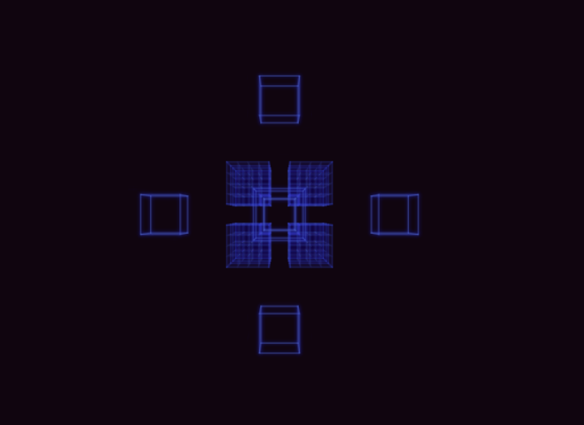
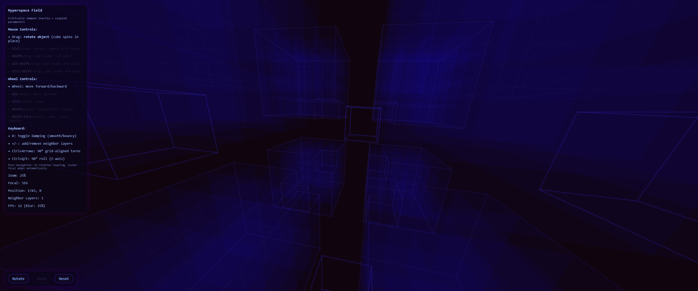
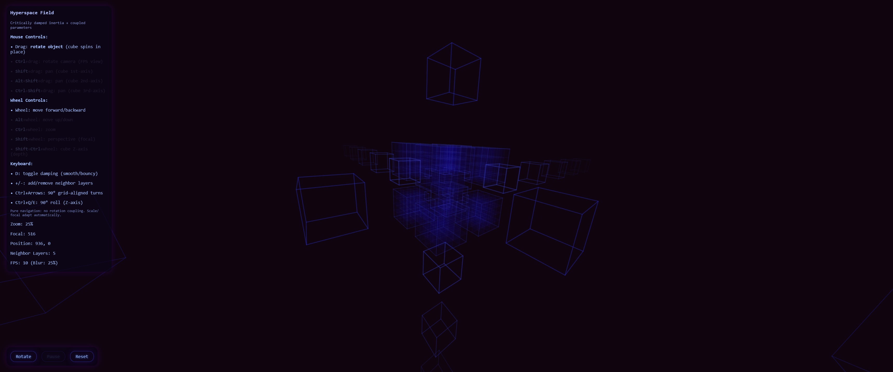
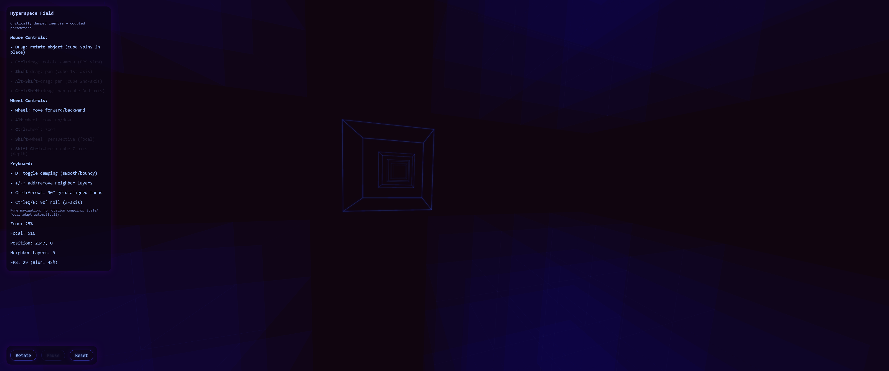

An interactive 3D visualization of a cubic hyperspace network composed of 8 inward-cut cubes arranged in a 2x2x2 lattice. Designed for intuitive navigation through coupled inertia-based controls, dynamic depth-aware rendering, and psychedelic color modulation based on rotation and zoom.
Eine interaktive 3D-Visualisierung eines kubischen Hyperraum-Netzwerks aus 8 nach innen geschnittenen Würfeln in einer 2x2x2-Gitteranordnung. Entwickelt für intuitive Navigation mittels trägheitsbasierter Steuerung, dynamischem tiefenbewusstem Rendering und psychedelischer Farbmodulation abhängig von Rotation und Zoom.
* Launch Interactive Visualization * Interaktive Visualisierung starten
Default View
Initial orientation showing the full 2x2x2 field with inward cutouts and central
void.
Standardansicht
Initiale Orientierung des vollständigen 2x2x2-Felds mit Innen-Aussparungen und zentralem
Hohlraum.

Subcube Detail
Close-up of a single cube revealing the 4x4x4 subcube lattice with one corner
removed.
Unterwürfel-Detail
Nahaufnahme eines einzelnen Würfels mit 4x4x4-Untergitter und einer entfernten
Ecke.

Neighbor Layers
Concentric surrounding cubes rendered with distance-based translucency and
glow.
Nachbarschichten
Konzentrische umgebende Würfel mit distanzbasiertem Transparenz- und
Leuchteffekt.

Spring Mode
Bouncy inertia with magnetic grid alignment as rotation settles into 90°
increments.
Federmodus
Elastische Trägheit mit magnetischer Gitterausrichtung, sobald Rotation in 90°-Schritten
einrastet.